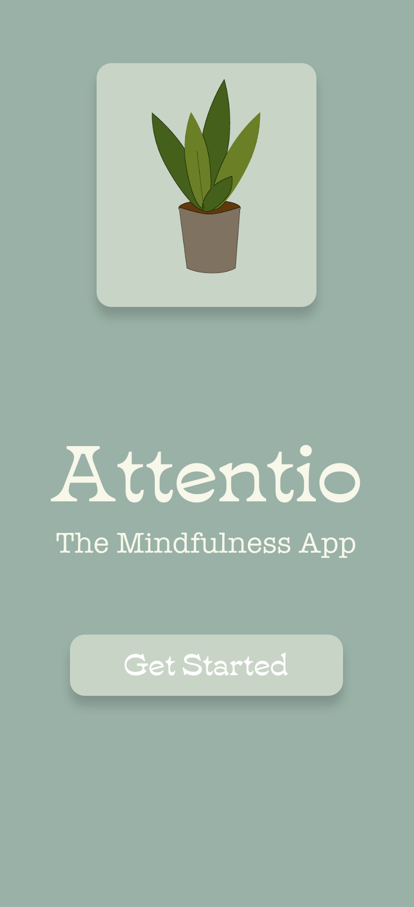
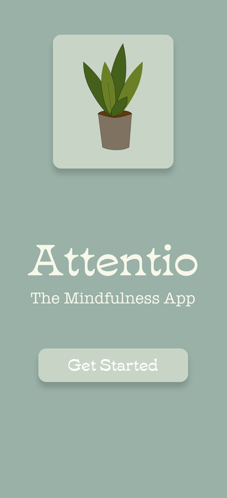
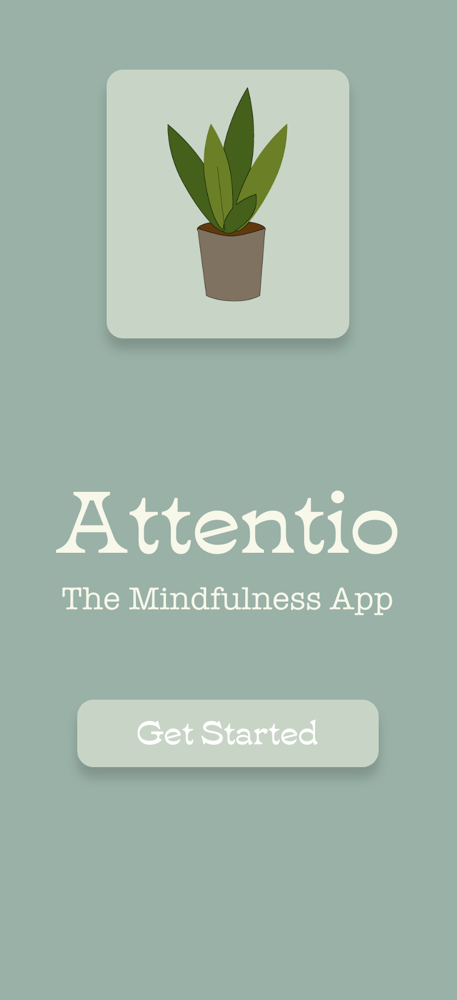

Attentio.
Creator • UI/UX • 2021
 



Creator • UI/UX • 2021

This day in age everything wants our attention- from our phone, to our work- life never seems to quit grab our focus. That's why my team and I created Attentio. Attentio is a mindfulness app designed to bring your focus back to yourself. The app has a variety of plants available to unlock, to unlock these plantsyou have to complete a set of challenges that are focused around helping you be mindful and take a break. By creating a reward system users will be hooked into coming back to the app to complete their plant wall.
My team and I spent time outside of meetings reflecting on how we feel when we are alone. We then wrote down those reflections and shared our findings with the group and chose one oberservation to focus on. We put her observations into several categories: who, what, when, why, and environment.
To fully embody the user we broke down what the user might say, think, does, and feels when in a situation alone.
From that ideation we were able to create "How might we questions" to fix the problem above.

For the final ideation phase of our Alone Time Project we each began by individually coming up with ideas and sketches on how we could answer the question “how might we make alone time more fulfilling or productive?”

After we selected our final design we created a prototype of that design on Adobe XD. We wanted it to have a 60's feel because that is a very relevant design aesthetic right now. We also wanted to create a lot of positive feedback for the user so they continue coming back to the app.